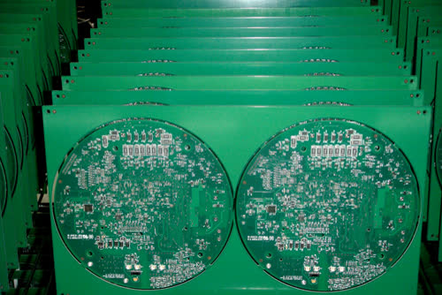
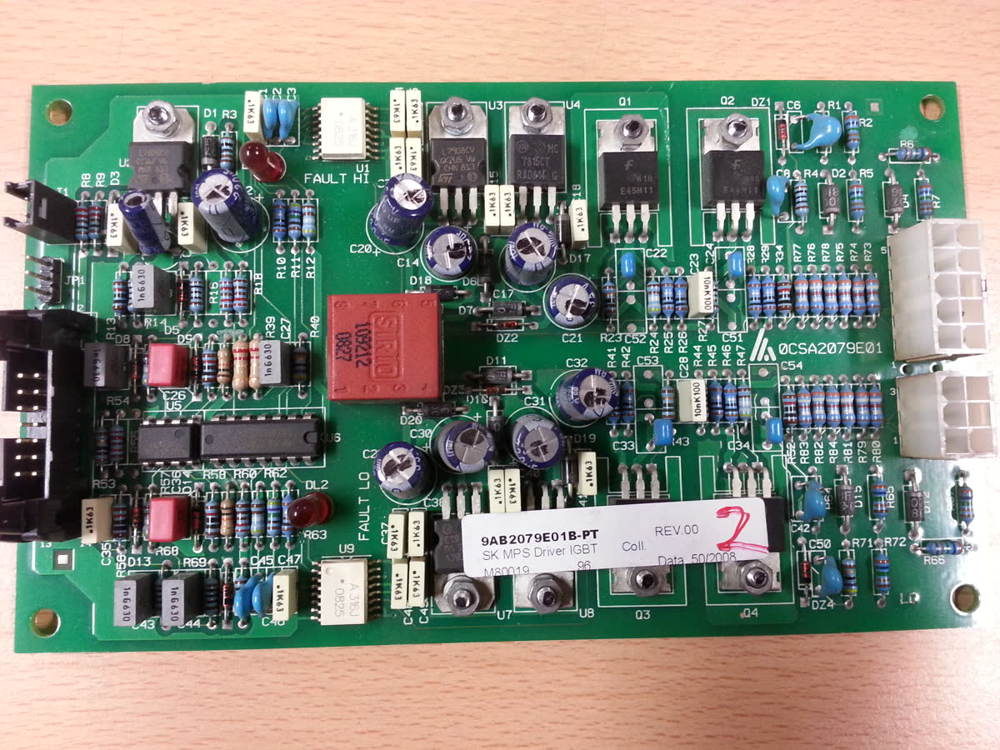
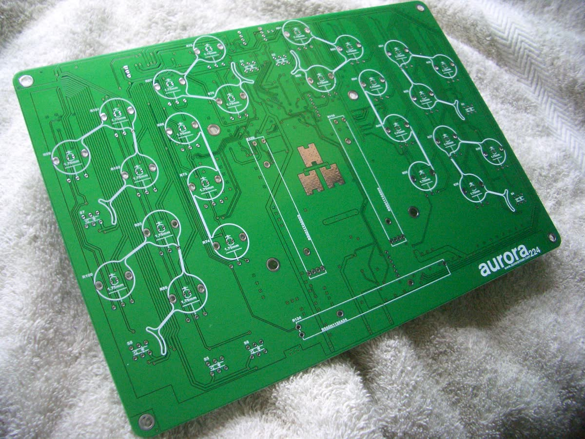
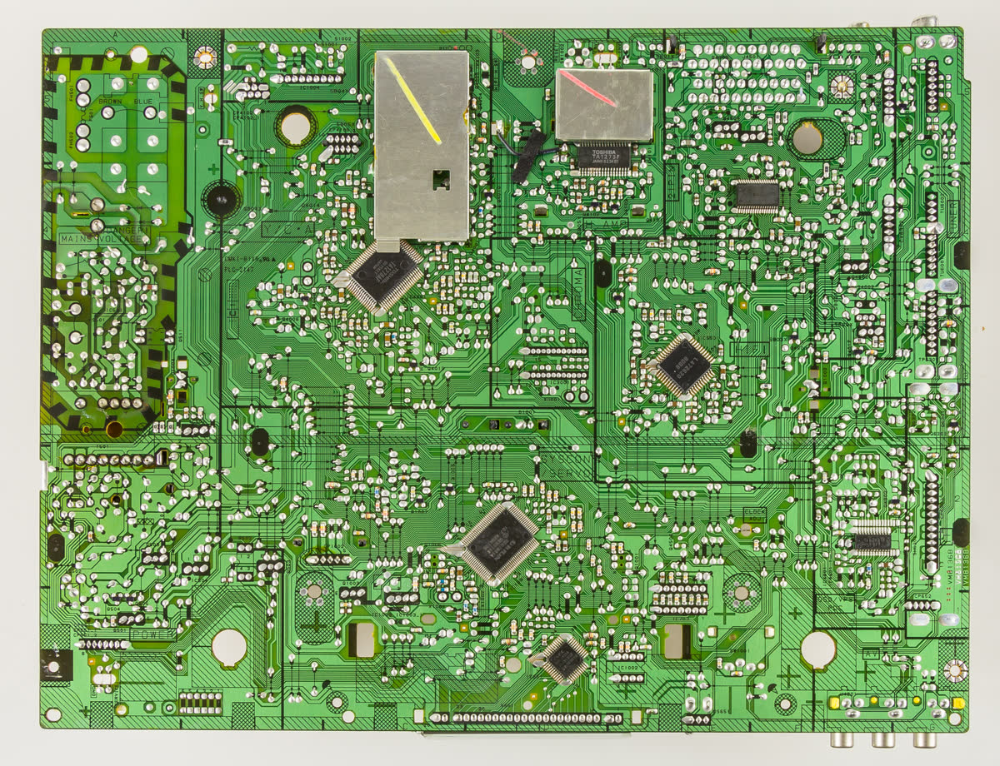

OPERATIONS OVERVIEW
总览
集中查看工位、视觉证据、标注任务与质量处置状态。
平台服务在线DGX 推理节点CVAT 标注服务MES 放行待联调NB-IP-SOP-01
CURRENT ACTION
HOLD当前处置
- 正在核对
- PCB、物料与手部操作轨迹
- 证据缺口
- 小型电容/电感需 ROI 二次检测与人工确认
- 建议动作
- 进入 CVAT 复核低置信度框，再冻结训练版本
EVIDENCE TREND
持续复核近 7 日视觉证据完备度
52%08/1461%08/1566%08/1664%08/1772%08/1881%08/1987%08/20
该指标表示目标、动作、ROI 和审核状态是否齐全，不代表未经真值集验证的模型精度。
MULTIMODAL LOOP
多模态协同链路
01相机视觉目标 / 动作 / ROI
02SOP 状态机阶段 / 顺序 / 超时
03语音交互提醒 / 确认 / 查询
04质量与 MES复核 / HOLD / 留痕
EDGE NODES
边缘设备
摄像头设备正在读取
DGX GPU在线
CVAT 队列待同步
LIVE REVIEW
视频链路已跑通全部视频现场监控与逐帧复核
真实视频均可切换；新增视频使用YOLOE-26S开放词汇预标注，所有候选进入人工复核。
LIVE CAMERA / DGX SPARK
未启动
实时相机与产线模型检测
点击“启动实时检测”打开摄像头
ALL CONNECTED CAMERAS
全部摄像头实时画面
只显示实际连接的 UVC 视频源；Windows 与本机同一局域网时，打开本网页即可同时查看全部视频流。
正在读取摄像头…
USB / NETWORK IDENTITY
摄像头身份、串口和主机网络
正在读取设备信息…
USB 视频设备
读取中…
串口控制通道
读取中…
采集主机网络
读取中…
CAMERA PROCUREMENT
量产优先稳定性Wi-Fi 与工业相机采购建议
关键质量工位优先使用工业 GigE 相机配 5 GHz/Wi-Fi 6 工业网桥；原生 Wi-Fi 摄像头只建议用于试点和非硬实时工位。价格为预算区间，采购前必须用目标固件实测 RTSP/ONVIF、延迟、断网重连和连续运行。
网络相机接入
config/network_cameras.json → [{"name":"工位相机","url":"rtsp://用户:密码@相机IP/码流路径"}]保存后在设备区点击“刷新设备”；密码应放入现场受控配置，不写入公开交付包。SHIFT ACTION BOARD
每秒随视频更新现场证据与处置中心
给班组长和质量员一个明确答案：当前工序是什么、看到了什么、还缺什么、下一步由谁处理。
等待视频播放后生成现场建议
--风险分
证据缺口风险等待数据尚未检查手、PCB/夹具、工具和MES证据
只表示当前画面是否看到必需项，不代表产品质量合格
从画面到处置
可追溯视觉模型只提供候选证据，不能绕过工艺、质量和MES的确定性放行条件。
当前工序与判断依据
等待数据- 播放现场视频后自动更新。
当前画面证据
00.0秒0工位ROI
0目标候选
0小目标候选
等待识别
自动候选必须人工复核。
质量员处置并留痕
先核对画面候选和证据缺口，再选择误报、返工或人工确认；确认动作不会自动把模型候选变成量产真值。
SOP STUDIO
SOP 编排工作台
工艺人员调整步骤顺序、名称和时间，保存后自动形成新版本。
仪表板装配 V1
草案CVAT ANNOTATION HUB
数据标注与一键导出
按区域保存关键帧，通过视频画面自动跟踪生成中间候选，无需逐帧重复画框。
FIXED STATION SCOPE
读取中固定工位标注口径
当前流程核对加载中
必须标注加载中
当前阶段不核对加载中
只标注能支撑本工位质量判定的目标。
1播放或跳到起始帧
→2画框并设为起始关键帧
→3跳到后续帧，可选校正结束框
→4自动跟踪生成中间框
→5逐段复核并保存
LOCAL EXPORT
标注数据一键保存到电脑
CSV/JSON 保存框坐标；完整 ZIP 同时包含坐标、审核记录、标注截图、网页代理视频和本地数据集，4K原片由离线交付目录单独保存。
CVAT FULL VIDEO
正在检查 CVAT当前整段视频创建标注任务
正在读取当前视频任务创建后上传整段网页代理视频，可在 CVAT 中播放、关键帧画框、插值和跟踪。
正在连接本机官方 CVAT；任务和视频上传状态会保留在下方记录中。
CVAT 任务记录
正在读取任务…
CVAT + SOP
中文工作流封装官方 CVAT 与本平台功能边界
官方 CVAT 已有项目/任务/作业、矩形/多边形/Mask、关键帧插值、自动标注、质量控制、共识、云存储与多格式导入导出。
本平台补充每分钟本地恢复点、轨迹分段删除、流程/手势/屏幕内容复核、烧录插电、标签与螺丝流程核对、MES/扭矩 HOLD 和标注成片回传。
当前明确边界CVAT 2.73.1 本体尚无官方中文语言包；本页提供完整中文入口和业务封装，官方作业页仍以原生界面为准。
DAILY VIDEO SYNC
每日网盘视频加载与标注成片回传
正在检查网盘适配器账号凭据不会写入网页或源码。
AI PRELABEL · EVERY 5 FRAMES
全部视频 AI 预标注
正在读取任务状态
0%待启动
所有修改已保存尚无任务级保存点SQLite 检查中
正在查看历史保存点此模式只读，不会改动当前标注。
00:00 / 00:00
尚未设置起始关键帧在起始帧画框后设为关键帧，跳到后续帧即可自动跟踪；移动结束框可作为人工校正。
当前视频轨迹
尚未生成轨迹。
当前视频尚无保存轮次
画框后点击“保存这个框”，完成一批后点击“保存本次进度”。
REVIEW QUEUE
加载中当前帧候选与已保存标注
| 时间/帧 | 区域/标签 | 来源 | 置信度 | 状态 | 操作 |
|---|---|---|---|---|---|
| 正在读取标注数据… | |||||
MODEL FACTORY
训练、验收与下发
平台帮工艺和质量人员把复杂算法变成“选数据、点训练、看结果、批准下发”。当前产线：加载中
REAL TRAINING WORKBENCH
读取本地数据按步骤配置真实训练与验证
1. 选已审核数据先确认图片、标签和真值状态2. 配置参数不确定时保留推荐值3. 等待训练页面持续显示日志和预计时间4. 下载部署包导出 PT、ONNX 与 Jetson 说明
高级参数（不了解时保留推荐值）
选择算法后显示用途系统会保留模型路径、参数、日志、指标和输出校验信息。
等待选择算法和数据集
训练任务排队下载部署包
等待训练日志…
训练与验证会真实调用本机 GPU；只有人工确认并按完整视频或产品 SN 冻结的测试集，才可声明量产精度。
PCB MODEL CANDIDATES
读取候选模型客户模型选择与统一精度对比
| 模型 | 训练数据 | 轮次 | Precision | Recall | mAP50 | mAP50-95 | 状态 | 选择 |
|---|---|---|---|---|---|---|---|---|
| 正在读取训练结果… | ||||||||
只有权重和验证报告均存在的模型可以选择；人工冻结测试集验收前保持 HOLD。
LINE MODEL BUNDLE
待加载产线模型组合
模型组合--
输入设备--
检测与防错--
迁移学习--
DGX SPARK MODEL HUB
检查中视觉SOP模型仓库与推理节点
--GPU
--已登记模型
--训练 batch
--推理服务
读取Spark部署策略…
--
数据集
三条产线数据目录PCB元器件、汽车固定件/螺丝、涂料缺陷分别管理，外部来源可追溯
GPU训练
YOLO26N 小目标学生模型真实执行训练、验证和模型导出，全部参数及日志留痕
业务验收
不只看mAP重点看漏装拦截率、错序拦截率、误报率
灰度下发
先1个工位可回滚，确认稳定后再批量下发
建议验收指标
由质量部门最终确认≥ 98%关键漏装拦截率
≥ 99%错序拦截率
≤ 2%每百件误报率
≤ 300ms现场反馈延迟
当前视频仅验证系统流程，不具备正式量产精度统计条件；量产指标必须使用现场冻结测试集测得。
VALIDATION OUTPUT
基线验证训练与模型性能输出
DATASET REGISTRY
加载中当前产线数据集与来源
MES CONNECTOR
MES 对接与追溯
每件产品形成一条可查询记录：谁、何时、在哪个工位、做了哪些步骤、结果如何、证据在哪。
上传给MES的内容
| 产品 | 工单号、产品SN、车型/配置 |
|---|---|
| 工位 | 产线、工位、班次、操作员 |
| SOP | 配方版本、步骤结果、开始/结束时间 |
| 质量 | 漏装/错序告警、扭矩、角度、最终判定 |
| 证据 | 关键帧、短视频、模型版本、事件编号 |
一条结果长什么样
{
"product_sn": "NB202608160001",
"station_id": "NB-IP-SOP-01",
"recipe": "IP-ASSEMBLY-V1",
"visual_sequence": "PASS",
"torque_result": "WAITING",
"final_result": "HOLD",
"evidence_video": "...mp4"
}尚未发送
DATA QUALITY / MODEL BENCHMARK
中文报告已生成标注、数据质量与模型对比
视频标注、数据集复核、模型性能和部署选择集中在一个工作页。
ANNOTATION HANDOFF
框 / Mask / TrackingCVAT 任务与三条产线数据
CVAT 负责正式标注，平台负责三条产线的标签目录、来源链接、预标注复核和训练流水线。PCB 元器件、汽车固定件/螺丝、涂料缺陷的外部数据源均保留许可证核验备注。
正式生产数据应把 CVAT 部署在 DGX 或厂内服务器，浏览器只访问内网地址；复制外部图片前先复核数据集许可。
BENCHMARK
加载中工业模型性能对比
--最高吞吐
--最低延迟
--验证图片
当前指标加载中。
OPEN DATA PREVIEW
来源可追溯PCB 电子元器件素材预览




这些是用于页面预览和素材索引的公开图片，不等同于已标注训练集。进入商业训练前仍需保留原始来源、作者和许可证记录，并在 CVAT 中重新按本项目标签体系标注。
THREE-MODEL SELECTION
加载中三算法工业部署选型
正在读取选型建议。
| 模型 | 架构/定位 | 本项目证据 | 主要风险 | 建议 |
|---|---|---|---|---|
| 正在加载三算法对比… | ||||
未完成同数据、同硬件验收前，不替换量产模型。
IPC / STATION AGENT
检查中工控机软件与设备统一管理
设备侧 LAN相机 · 扫码枪 · 打印机 · USB485 · PLC/电批
→IPC Station AgentCamera Service · Adapter · SOP FSM · SQLite队列 · HMI
→AI / MES LANDGX FastAPI/Triton · MES/工厂服务器 · 审计回传
| 软件/组件 | 用途 | 状态 | 地址/说明 |
|---|---|---|---|
| 正在检查 DGX/IPC 软件环境… | |||